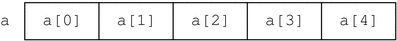
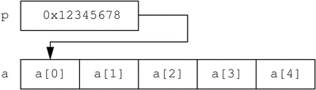

Previous
Previous
Pointers and Arrays
Pointers are memory addresses of data objects in the operating system kernel or in the address space of a user process. D provides the ability to create and manipulate pointers and store them in variables and associative arrays. This chapter describes the D syntax for pointers, operators that can be applied to create or access pointers, and the relationship between pointers and fixed-size scalar arrays. Also discussed are issues relating to the use of pointers in different address spaces.
Note - If you are an experienced C or C++ programmer, you can skim most of this chapter as the D pointer syntax is the same as the corresponding ANSI-C syntax. You should read Pointers to DTrace Objects and Pointers and Address Spaces as they describe features and issues specific to DTrace.
Pointers and Addresses
The Solaris Operating System uses a technique called virtual memory to provide each user process with its own virtual view of the memory resources on your system. A virtual view on memory resources is referred to as an address space, which associates a range of address values (either [0 ... 0xffffffff] for a 32-bit address space or [0 ... 0xffffffffffffffff] for a 64-bit address space) with a set of translations that the operating system and hardware use to convert each virtual address to a corresponding physical memory location. Pointers in D are data objects that store an integer virtual address value and associate it with a D type that describes the format of the data stored at the corresponding memory location.
You can declare a D variable to be of pointer type by first specifying the type of the referenced data and then appending an asterisk (*) to the type name to indicate you want to declare a pointer type. For example, the declaration:
int *p;
declares a D global variable named p that is a pointer to an integer. This declaration means that p itself is an integer of size 32 or 64-bits whose value is the address of another integer located somewhere in memory. Because the compiled form of your D code is executed at probe firing time inside the operating system kernel itself, D pointers are typically pointers associated with the kernel's address space. You can use the isainfo(1) -b command to determine the number of bits used for pointers by the active operating system kernel.
If you want to create a pointer to a data object inside of the kernel, you can compute its address using the & operator. For example, the operating system kernel source code declares an int kmem_flags tunable. You could trace the address of this int by tracing the result of applying the & operator to the name of that object in D:
trace(&`kmem_flags);
The * operator can be used to refer to the object addressed by the pointer, and acts as the inverse of the & operator. For example, the following two D code fragments are equivalent in meaning:
p = &`kmem_flags; trace(`kmem_flags); trace(*p);
The left-hand fragment creates a D global variable pointer p. Because the kmem_flags object is of type int, the type of the result of &`kmem_flags is int * (that is, pointer to int). The left-hand fragment traces the value of *p, which follows the pointer back to the data object kmem_flags. This fragment is therefore the same as the right-hand fragment, which simply traces the value of the data object directly using its name.
Pointer Safety
If you are a C or C++ programmer, you may be a bit frightened after reading the previous section because you know that misuse of pointers in your programs can cause your programs to crash. DTrace is a robust, safe environment for executing your D programs where these mistakes cannot cause program crashes. You may indeed write a buggy D program, but invalid D pointer accesses will not cause DTrace or the operating system kernel to fail or crash in any way. Instead, the DTrace software will detect any invalid pointer accesses, disable your instrumentation, and report the problem back to you for debugging.
If you have programmed in the Java programming language, you probably know that the Java language does not support pointers for precisely the same reasons of safety. Pointers are needed in D because they are an intrinsic part of the operating system's implementation in C, but DTrace implements the same kind of safety mechanisms found in the Java programming language that prevent buggy programs from damaging themselves or each other. DTrace's error reporting is similar to the run-time environment for the Java programming language that detects a programming error and reports an exception back to you.
To see DTrace's error handling and reporting, write a deliberately bad D program using pointers. In an editor, type the following D program and save it in a file named badptr.d:
Example 5-1 badptr.d: Demonstration of DTrace Error HandlingBEGIN
{
x = (int *)NULL;
y = *x;
trace(y);
}The badptr.d program creates a D pointer named x that is a pointer to int. The program assigns this pointer the special invalid pointer value NULL, which is a built-in alias for address 0. By convention, address 0 is always defined to be invalid so that NULL can be used as a sentinel value in C and D programs. The program uses a cast expression to convert NULL to be a pointer to an integer. The program then dereferences the pointer using the expression *x, and assigns the result to another variable y, and then attempts to trace y. When the D program is executed, DTrace detects an invalid pointer access when the statement y = *x is executed and reports the error:
# dtrace -s badptr.d dtrace: script '/dev/stdin' matched 1 probe CPU ID FUNCTION:NAME dtrace: error on enabled probe ID 1 (ID 1: dtrace:::BEGIN): invalid address (0x0) in action #2 at DIF offset 4 dtrace: 1 error on CPU 0 ^C #
The other problem that can arise from programs that use invalid pointers is an alignment error. By architectural convention, fundamental data objects such as integers are aligned in memory according to their size. For example, 2-byte integers are aligned on addresses that are multiples of 2, 4-byte integers on multiples of 4, and so on. If you dereference a pointer to a 4-byte integer and your pointer address is an invalid value that is not a multiple of 4, your access will fail with an alignment error. Alignment errors in D almost always indicate that your pointer has an invalid or corrupt value due to a bug in your D program. You can create an example alignment error by changing the source code of badptr.d to use the address (int *)2 instead of NULL. Because int is 4 bytes and 2 is not a multiple of 4, the expression *x results in a DTrace alignment error.
For details about the DTrace error mechanism, see ERROR Probe.
Array Declarations and Storage
D provides support for scalar arrays in addition to the dynamic associative arrays described in Chapter 3. Scalar arrays are a fixed-length group of consecutive memory locations that each store a value of the same type. Scalar arrays are accessed by referring to each location with an integer starting from zero. Scalar arrays correspond directly in concept and syntax with arrays in C and C++. Scalar arrays are not used as frequently in D as associative arrays and their more advanced counterparts aggregations, but these are sometimes needed when accessing existing operating system array data structures declared in C. Aggregations are described in Chapter 9, Aggregations.
A D scalar array of 5 integers would be declared by using the type int and suffixing the declaration with the number of elements in square brackets as follows:
int a[5];
The following diagram shows a visual representation of the array storage:
Figure 5-1 Scalar Array RepresentationThe D expression a[0] is used to refer to the first array element, a[1] refers to the second, and so on. From a syntactic perspective, scalar arrays and associative arrays are very similar. You can declare an associative array of five integers referenced by an integer key as follows:
int a[int];
and also reference this array using the expression a[0]. But from a storage and implementation perspective, the two arrays are very different. The static array a consists of five consecutive memory locations numbered from zero and the index refers to an offset in the storage allocated for the array. An associative array, on the other hand, has no predefined size and does not store elements in consecutive memory locations. In addition, associative array keys have no relationship to the corresponding's value storage location. You can access associative array elements a[0] and a[-5] and only two words of storage will be allocated by DTrace which may or may not be consecutive. Associative array keys are abstract names for the corresponding value that have no relationship to the value storage locations.
If you create an array using an initial assignment and use a single integer expression as the array index (for example, a[0] = 2), the D compiler will always create a new associative array, even though in this expression a could also be interpreted as an assignment to a scalar array. Scalar arrays must be predeclared in this situation so that the D compiler can see the definition of the array size and infer that the array is a scalar array.
Pointer and Array Relationship
Pointers and arrays have a special relationship in D, just as they do in ANSI-C. An array is represented by a variable that is associated with the address of its first storage location. A pointer is also the address of a storage location with a defined type, so D permits the use of the array [ ] index notation with both pointer variables and array variables. For example, the following two D fragments are equivalent in meaning:
p = &a[0]; trace(a[2]); trace(p[2]);
In the left-hand fragment, the pointer p is assigned to the address of the first array element in a by applying the & operator to the expression a[0]. The expression p[2] traces the value of the third array element (index 2). Because p now contains the same address associated with a, this expression yields the same value as a[2], shown in the right-hand fragment. One consequence of this equivalence is that C and D permit you to access any index of any pointer or array. Array bounds checking is not performed for you by the compiler or DTrace runtime environment. If you access memory beyond the end of an array's predefined value, you will either get an unexpected result or DTrace will report an invalid address error, as shown in the previous example. As always, you can't damage DTrace itself or your operating system, but you will need to debug your D program.
The difference between pointers and arrays is that a pointer variable refers to a separate piece of storage that contains the integer address of some other storage. An array variable names the array storage itself, not the location of an integer that in turn contains the location of the array. This difference is illustrated in the following diagram:
Figure 5-2 Pointer and Array StorageThis difference is manifested in the D syntax if you attempt to assign pointers and scalar arrays. If x and y are pointer variables, the expression x = y is legal; it simply copies the pointer address in y to the storage location named by x. If x and y are scalar array variables, the expression x = y is not legal. Arrays may not be assigned as a whole in D. However, an array variable or symbol name can be used in any context where a pointer is permitted. If p is a pointer and a is an array, the statement p = a is permitted; this statement is equivalent to the statement p = &a[0].